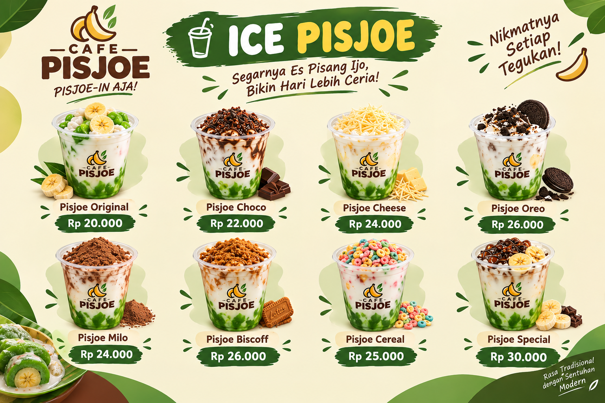
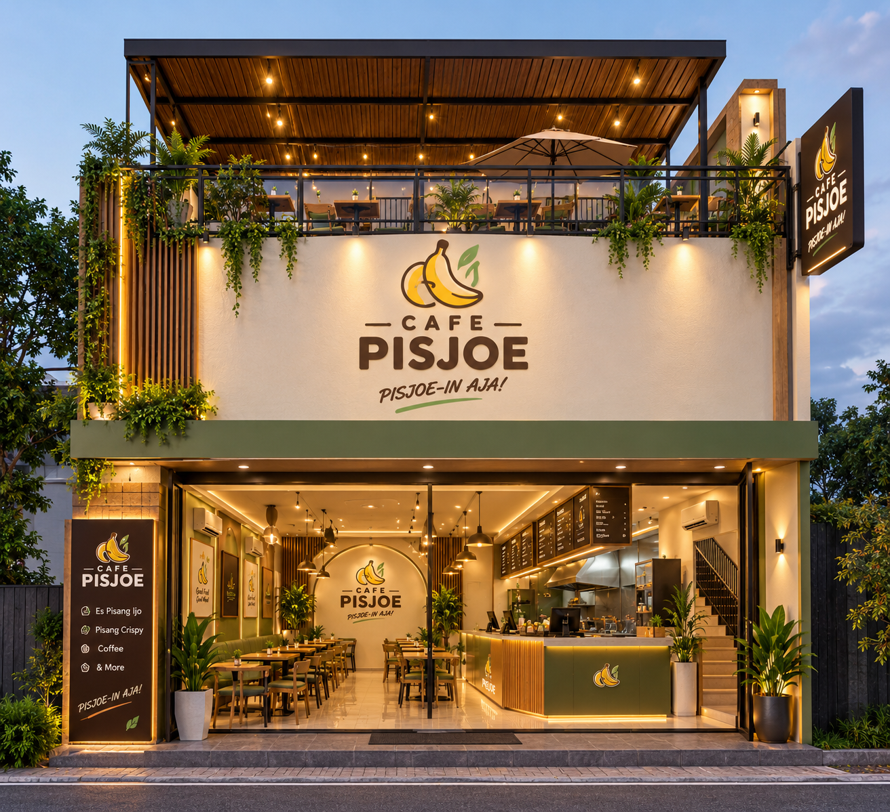
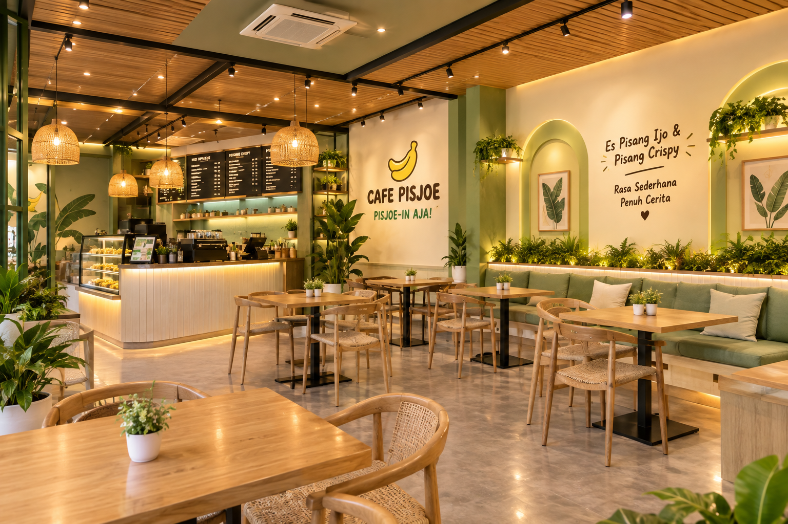
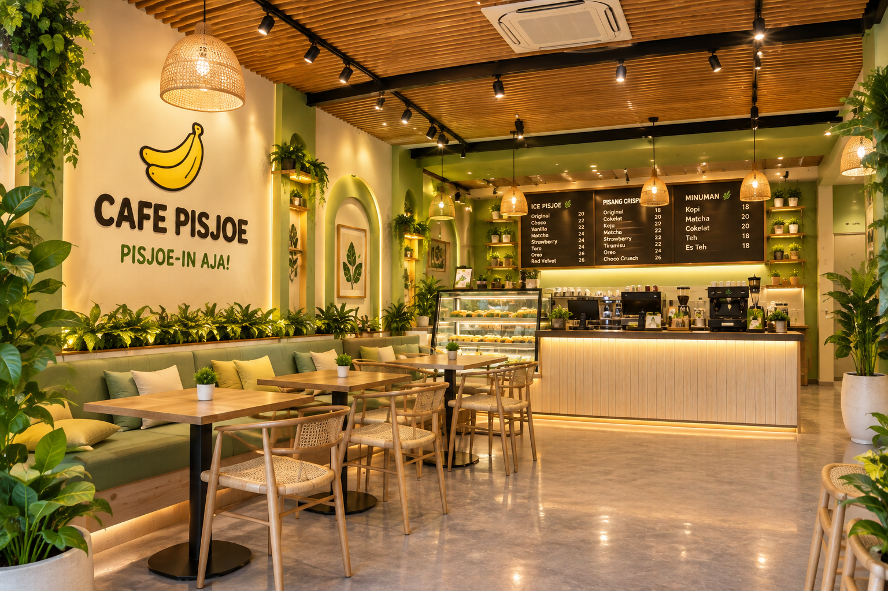
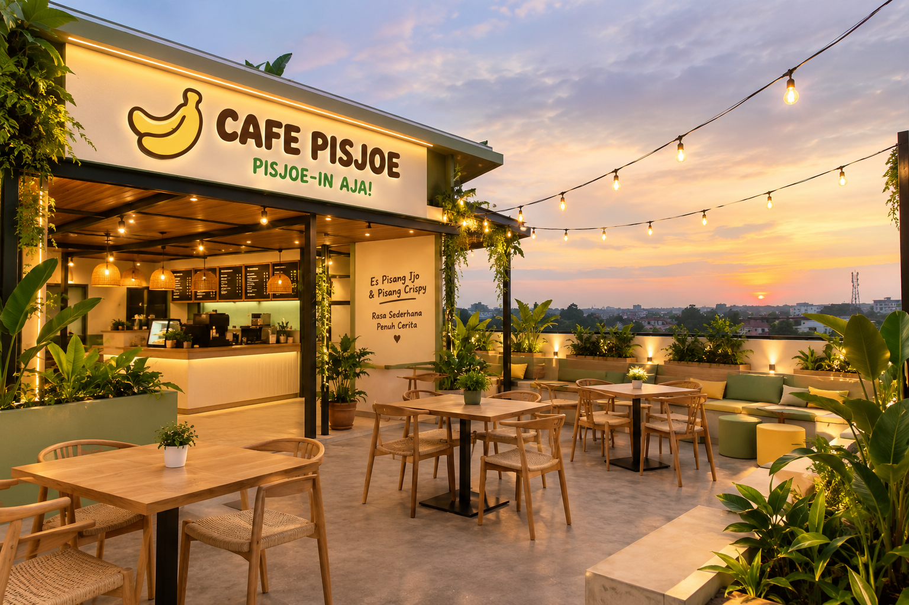

01DINGIN, LEMBUT, MENYEGARKAN
ICE PISJOE
Minuman andalan yang creamy dan menyegarkan. Teman pas untuk bikin harimu lebih cerah.
A LITTLE JOY IN EVERY SIP
Tempat singgah untuk menikmati minuman favorit, camilan hangat, dan waktu santai yang terasa lebih istimewa.


EST. WITH LOVECERITA DI BALIK CANGKIR
CAFE PISJOE hadir sebagai tempat untuk berhenti sejenak dari ramainya hari. Kami meracik minuman dan camilan dengan sepenuh hati, supaya setiap kunjungan terasa akrab dan selalu ingin diulang.
Datang sendiri, bersama teman, atau bawa cerita panjangmu. Di sini, selalu ada tempat untukmu.
Temukan tempat kami ↗NAIK SEDIKIT, SANTAINYA LEBIH
Nikmati sudut rooftop kami untuk udara segar, obrolan tanpa buru-buru, dan momen kecil yang ingin disimpan lebih lama.
Mampir ke rooftop ↗take it
SECUIL SUASANA
Ruang yang nyaman, rasa yang akrab,
dan banyak alasan untuk kembali.


Good things
take time.
Stay a while.


IKUTI HARI-HARI KAMI
Tag momen Pisjoe-mu dan mari berbagi cerita.
KATA MEREKA
Tempatnya nyaman banget buat ngobrol santai. Ice Pisjoe-nya creamy, pisang crispy-nya juga enak dimakan pas masih hangat!
KAMI TUNGGU KEDATANGANMU
Jadikan CAFE PISJOE tempat singgah berikutnya. Silakan cek lokasi dan jam operasional kami sebelum berkunjung.